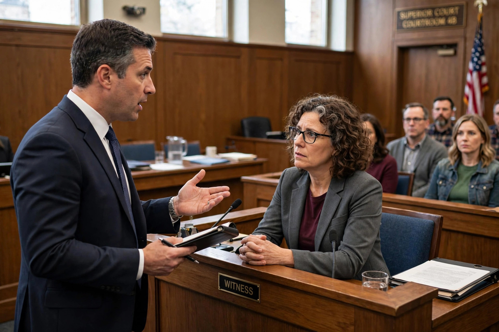

From Wikipedia, the free encyclopedia
| Confrontation Clause | |
|---|---|
| Source | Sixth Amendment, U.S. Constitution |
| Key case | Crawford v. Washington (2004) |
| Earlier framework | Ohio v. Roberts (1980) |
| Applies to | Federal and state criminal prosecutions |

The Confrontation Clause of the Sixth Amendment to the United States Constitution guarantees a criminal defendant the right "to be confronted with the witnesses against him." It entitles the accused to face adverse witnesses in court, to cross-examine them, and generally bars the admission of out-of-court testimonial statements unless the witness testifies at trial or is unavailable and was previously subject to cross-examination.
"In all criminal prosecutions, the accused shall enjoy the right ... to be confronted with the witnesses against him."
For decades the clause was applied through Ohio v. Roberts (1980), which allowed hearsay if it bore adequate "indicia of reliability." In Crawford v. Washington (2004), Justice Scalia's majority opinion replaced that framework with a historical test: testimonial statements of absent witnesses are admissible only if the declarant is unavailable and the defendant had a prior opportunity to cross-examine. Reliability, the Court said, is to be tested by cross-examination itself, not by judicial assessment.
Subsequent decisions defined the boundaries of "testimonial": statements made to enable police assistance during an ongoing emergency are nontestimonial (Davis v. Washington, 2006); forensic laboratory reports are testimonial (Melendez-Diaz v. Massachusetts, 2009); and the confrontation right also limits how a prosecution witness may be impeached or shielded. A defendant may forfeit the right by wrongdoing intended to make a witness unavailable, and the clause does not apply in civil cases or at sentencing in the same way as at trial.